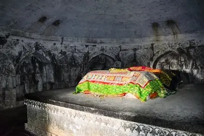

Mistakenly known as Chand Bibi Palace, the monument is the Tomb of Salabat Khan II. Salabat Khan II was a minister of Murtaza, the fourth Nizam Shah King after Changiz Khan was put to death by the king in 1579. This monument is a three-storeyed structure constructed in stone is located on the crest of a hill near the city of Ahmednagar. The Tomb of Salabat Khan II is situated at an altitude of 3080 feet above sea level and around 700 feet above the city. The Tomb provides a great view of the entire city and is visible from any part of the city. The monument is believed to have been initially planned for a seven-storey complex but was only constructed for three-storey. The Building has eight sides of a plain simple structure.
